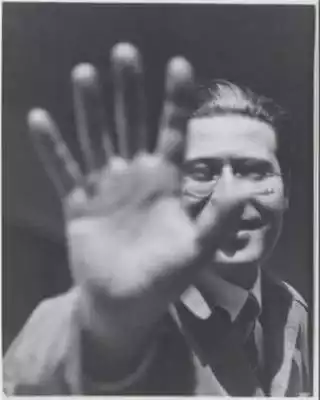
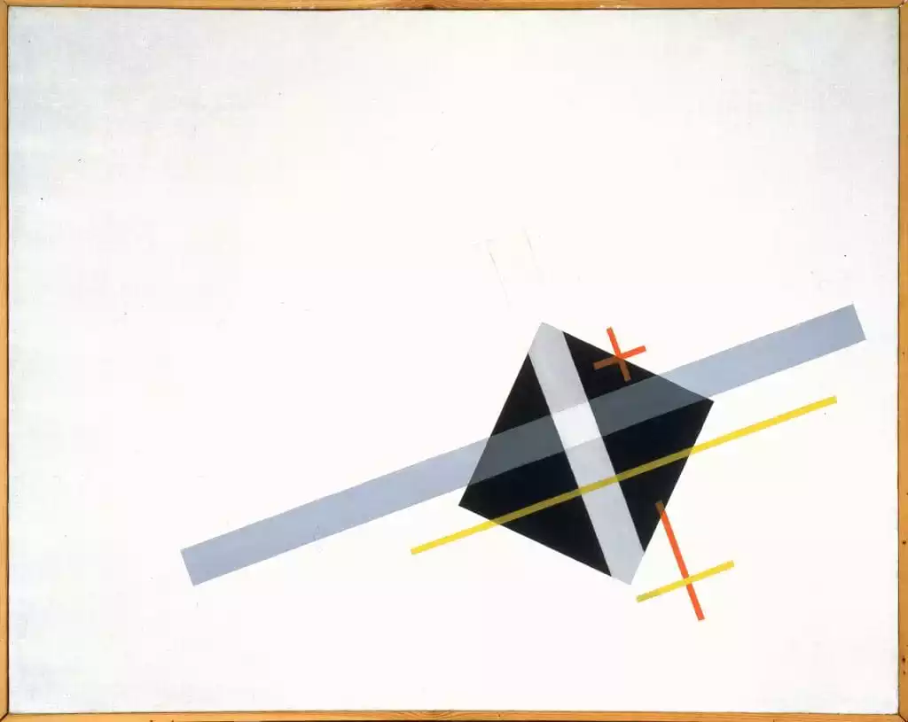

Comprendre la vision derrière Vinko et l'héritage de Laszlo Moholy-Nagy.
Vinko naît d'une contemplation attentive de l'œuvre de Laszlo Moholy-Nagy, artiste hongrois du XXe siècle et pionnier du Bauhaus. Son travail sur la lumière, les formes géométriques et leur interaction nous a inspiré à créer des vêtements qui portent en eux une vision artistique.
Le nom Vinko signifie « doux souvenir » en espéranto, une langue construite dans le but d'être universelle, tout comme l'art de Moholy-Nagy. Chaque pièce que nous créons veut vous laisser un souvenir, une impression, quelque chose qui résonne et que vous pourrez contempler. Car une des convictions de Moholy-Nagy, et à laquelle nous croyions, c'est que l'art doit se mettre au service de la société, et qu'il doit donc lui être accessible.

Laszlo Moholy-Nagy est un artiste fondamental du XXe siècle. Professeur au Bauhaus de 1923 à 1928, il a révolutionné notre rapport à la lumière dans l'art. Pas simplement comme sujet à peindre, mais comme matière première, comme élément structurant.
Ses photogrammes, créés en posant directement des objets sur du papier photosensible, font de la lumière la véritable artiste. Son Modulateur Lumière-Espace (1930) pousse cette réflexion plus loin : une sculpture cinétique qui projette des ombres en mouvement perpétuel.
L'œuvre qui nous inspire (Ki (1922)) est une composition minimaliste : un losange noir, deux bandes diagonales, une ligne rouge. Elle n'impose aucun sens. Elle invite chacun à y voir ce qu'il souhaite.
Moholy-Nagy croyait que l'art et la technologie, mis au service de l'humanité, pouvaient rendre le monde meilleur. Nous reprenons ce pari au pied de la lettre.
Vinko n'est pas un musée ambulant qui porte les œuvres comme des trophées. C'est une invitation à contempler le monde différemment. Chaque sweatshirt que vous portez est un fragment de Ki, remis en circulation, vivant dans votre quotidien.
Nos trois valeurs fondatrices encadrent tout ce que nous faisons :

Nous mélangeons 55% de lin et 45% coton, deux fibres naturelles qui offrent douceur, respirabilité et durabilité pour réaliser notre streetwear. Pas de synthétique, nide microplastiques.
Les bandes colorées sont imprimées sur le tissu pour restituer les effets de superposition qui font l'identité de Ki. Le losange noir central et le logo Vinko sont, eux, brodés afin d'offrir un relief tactile et une présence physique concrète.
Chaque vêtement devient plus doux à chaque lavage sans perdre ses propriétés. Un vêtement qui vieillit bien est un vêtement qui laisse une vraie trace.
Ce n'est pas juste un slogan. C'est une invitation. Porter Vinko, c'est choisir que quelque chose tienne dans un monde où les couleurs s'effacent. C'est porter une œuvre sans qu'elle ait besoin de toujours avoir à s'expliquer. Vinko, c'est laisser les formes parler d'elles-mêmes.